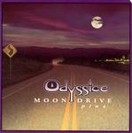

| Artist: | Odyssice |
| Title: | Moondrive Plus |
| Label: | Cyclops CYCL 109 |
| Length(s): | 38 minutes |
| Year(s) of release: | 2003 |
| Month of review: | [12/2003] |
| 1) | Frustrations | 8.14 |
| 2) | And So Am I | 5.09 |
| 3) | Different Questions | 5.35 |
| 4) | The Final Decisions | 6.22 |
| 5) | Losing Her | 6.16 |
| 6) | Power Loc | 6.00 |
And So Am I opens with piano (a bit in the line of Queens The Show Must Go On). Then the Camel feel sets in strongly. If you are into Camel, you owe it to yourself to here this. The playing of Peeters, is very emotive, the drawback of him taking the lead most of the time, is that what the drummer is doing is less than eventful. The keyboards do get a bit of space, but compared to the guitar, well they just don't make it. This imbalance is no problem for a while, but on a longer album, it does tend to wear.
Different Questions continues in the same vein, a bit more spaceous, stretched out. No problem in the melodic department again, A bit of light piano in the middle, dancing. For the remainder the guitar is the dominating force. The Final Decisions is not much different from the aforegoing, again some very strong guitar runs, and this time some marching drums. The part just after the 3 minute mark seems to be taken straight from the Nude album.
Losing Her is taken off the Exposure 88 compilation album released by Freia in 1988 (the booklet mentions the name Exposion, but I think the name Exposure is the correct one). The guitar playing is rougher here, while the keys remind me more of Twelfth Night than of Camel. Melodically, it also somewhat more mellow than the previous tracks and I like it significantly less. Halfway the tempo comes in, but the music stays a bit on the thin side, productionally. Not so surprising in view of the possibilities when this was recorded. The percussion seems to be a bit more eventful, in fact the middle part is quite percussive and rich in atmosphere. In this way, the song certainly does improve, the ending guitar solo being one of the more emotional ones.
Power Loc is a live track recorded in Zwolle, opening with a bit of an Assassin feel. The live feel is strongly present, leading to less compact playing. Not as strong as the material earlier on this disc, but it does show the band can take their music to the stage.